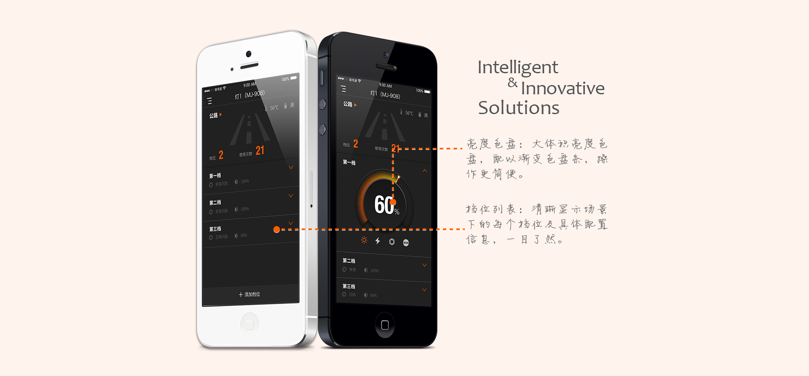

迈极炫
为了配合不同的使用场景，自行车灯所需的照明条件也不尽相同。迈极炫就是一款配合蓝牙自行车灯使用的智能调光APP。一款亮度固定的自行车灯，配合迈极炫调光APP，就能满足不同的使用场景，真正做到了一灯多用，将普通自行车灯的实用性大大提升。
Question 客户问题
- 使用场景单一：
- 普通自行车灯无法调节流明度和闪烁模式，无法满足不同骑行场景对于照明的要求；
- 信息不明确：
- 野外骑行需要保证自行车灯有充足的电量，但是用户无法准确获知车灯的剩余电量
Solution 解决方法
- 多合一：
- 车灯中科存储多个场景，每个场景下可配置不同档位，一个车灯即可满足所有的使用场景；
- 实时监控：
- 实时监控车灯的电量与温度，方便用户掌握车灯信息，安排行程；
- 云端存储：
- 车灯配置信息存储至云端，用户只需配置一次，便可多次使用;
